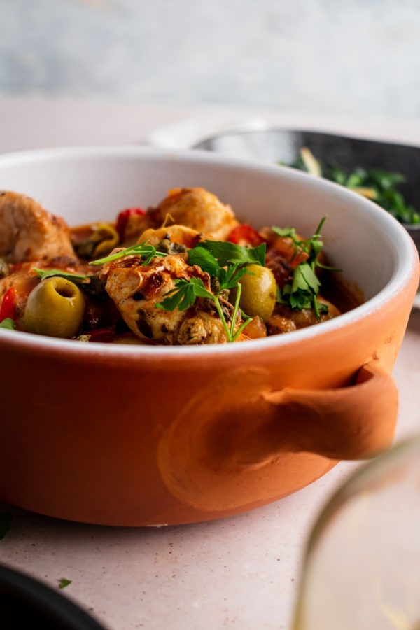

Anatolian Chicken Stew

A one pot stew from the Turkish part of the Mediterranean.
Ingredients
- 1/2 Chicken (1/2 of a 4 pound chicken), cut into 2” pieces
- salt and pepper
- 2 tbsp extra virgin olive oil
- 1 small red onion, chopped
- 1 red bell pepper, sliced into thin strips
- 1 garlic clove, minced
- 1 15 ounce can crushed tomatoes
- 1 cup chicken broth
- 1 cup water
- 2 bay leaves
- 1 tbsp oregano
- 1/2 cup green olives, pitted
- 2 tbsp capers, chopped if too big
- 1/4 cup fresh parsley
Steps
- Season the chicken with salt and pepper
- Heat dutch oven and add olive oil.
-
Add chicken and cook on every side until golden brown. Remove chicken
for later.
-
Add the crushed tomatoes, chicken broth, water, bay leaves and oregano.
Turn heat to high.
-
Add chicken back to the pot making sure chicken is covered with liquied.
Bring to a boil.
-
Simmer for 15 more minutes or until chicken is done and serve with
capers, green olives, and fresh parsley.
Home